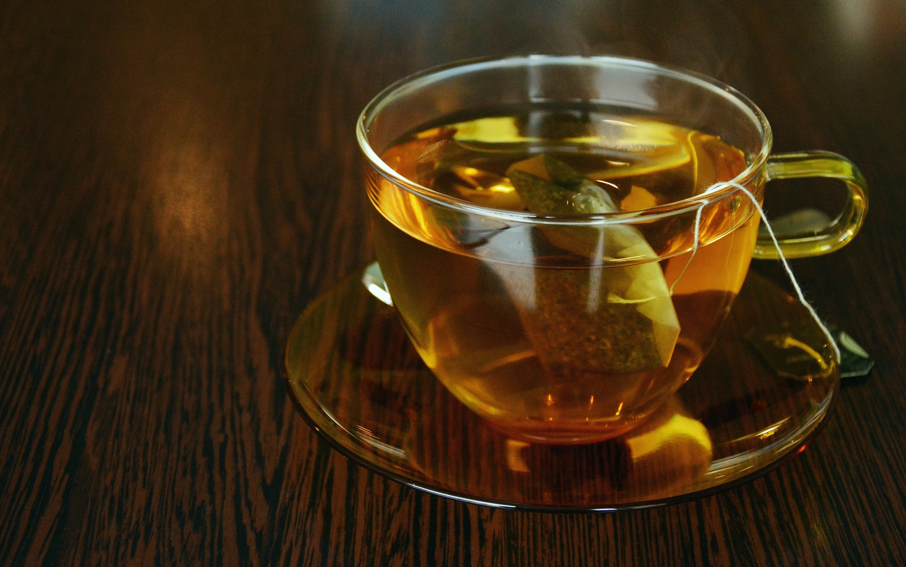
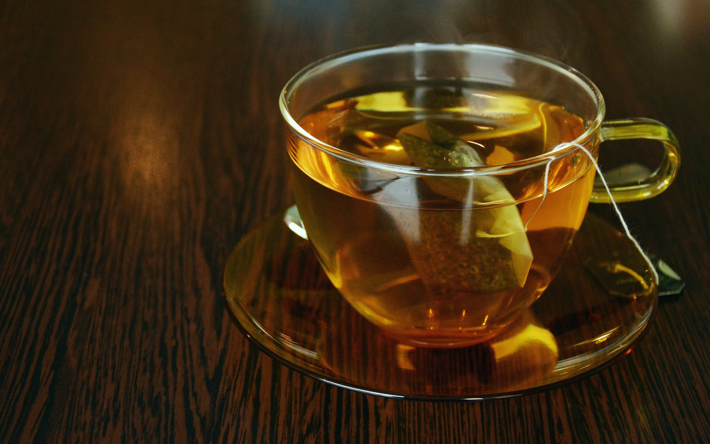
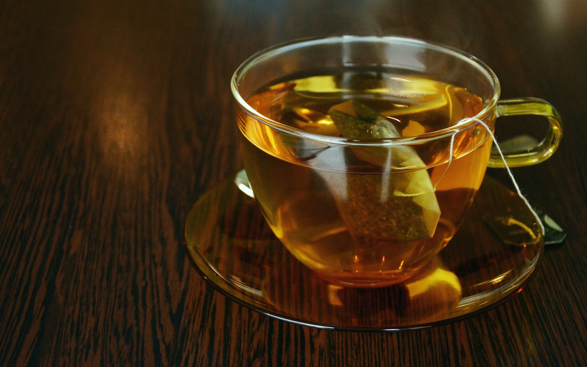
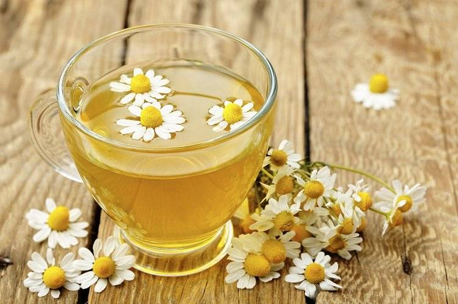

Alături de apă, ceaiul reprezintă cea mai bună sursă de hidratare a organismului.
 

"Ceaiul este pace lichidă"
Alături de apă, ceaiul reprezintă cea mai bună sursă de hidratare a organismului.

Șiai că, ziua internațională a ceaiului este 15 decembie?
Ceaiul este cultivat în zeci de tări de pe glob. Printre principalii producători de ceai se numără China, India, Sri Lanka și Kenya. India este cel mai mare producător de ceai negru, în timp ce China și Japonia sunt cei mai mari producători de ceai verde.
Similar apei și cafelei, ceaiul nu are o valoare nutritivă proprie pentru că nu conține proteine, glucide, lipide, nici minerale sau vitamine. Este un lichid pe care putem să-l consumăm pentru a acoperi aportul hidric zilnic și este o alternativă sănătoasă pentru apă (cu condiția să nu fie îndulcit).
Pe langa catechine, o subclasa de flavonoide (compusi care se gasesc in fructe, legume si anumite tipuri de bauturi care au efect benefic asupra organismului ca urmare a efectelor antioxidantilor si substantelor biochimice) , in ceai gasim cea mai mare concentratie de polifenoli (alta grupa de fitonutrienti benefici), enzime si cafeina (numita in acest caz theina).
La greutate egală, frunzele de ceai au același conținut de cofeina ca și boabele de cafea. Pentru că se folosește o cantitate mică de frunze de ceai la preparare, băutura obținută este mai „slabă“ decât cafeaua. Theina și theobromina din ceai conferă acestuia proprietăți stimulatoare moderate. Theobromina, similar cofeinei, stimulează funcționarea rinichilor, ameliorează circulația, crește diureza și favorizează eliminarea excesului de lichide.
Ceaiul este o bautură obținută prin infuzarea frunzelor uscate ale plantei Camellia sinensis.
Există trei categorii principale de ceai în functie de plantele care sunt folosite pentru obținerea băuturii: ceai obtinuț din frunze de Camellia sinensis, ceai obținut din plante, fructe sau condimente si ceai aromatic. Fiecare categorie are la rândul ei mai multe subcategorii.
Doar ceaiul obținut din frunze de Camellia sinensis se poate numi tehnic ceai, restul ceaiurilor sunt infuzii (din plante, fructe, condimente sau amestec).
Greșit denumite „ceai“, infuziile sunt băuturi naturale lipsite de cofeina obținute prin scufundarea diferitelor plante în apă fierbinte. Multe dintre ele au proprietăți medicinale și majoritatea favorizează digestia, relaxarea sau somnul. Plantele folosite pentru infuzii conțin uleiuri esențiale, alcaloizi, fitonutrienți și sunt cunoscute dintotdeauna drept remedii naturiste ale diferitelor afecțiuni. Cel mai frecvent se obțin infuzii din: mușețel, mentă, tei, levanțică, sunătoare, rozmarin etc.
Atât ceaiul verde cât şi cel negru provin din frunzele plantei Camellia sinensis; cu toate acestea, procesarea frunzelor face diferenţa între produsele finite. Frunzele pentru ceaiul negru sunt complet oxidate, iar cele pentru ceaiul verde sunt uşor aburite înainte de a fi uscate. Evitați suplimentele care conțin extras de ceai verde pentru că acestea pot fi foarte concentrate și pot produce efecte adverse serioase.

Culoarea ceaiului este determinată de lungimea intervalului de infuzie a frunzelor:
Ceaiul deschis la culoare este infuzat o perioadă scurtă, conține mai multă theina și mai puține thaninuri, deci are efect stimulator;
Ceaiul închis la culoare este infuzat timp îndelungat și este bogat în thaninuri care împiedică absorbția theinei din intestin, deci are efect de relaxare.

Pe lângă hidratarea sănătoasă a organismului, ceaiul aduce o serie de beneficii terapeutice importante.
Marii băutori de ceai au un risc scăzut de deces prin boli cardiovasculare, mecanismul responsabil de acest fenomen fiind reducerea oxidarii colesterolului și implicit diminuarea progresiei proceselor de ateroscleroza
. Puterea antioxidantă a ceaiului împiedică colesterolul să adere la pereții arteriali și mai mult, reduce nivelul acestuia în sânge.
Un consum de ceai de minim 5 cești/zi scade cu 70% riscul de accident vascular cerebral si cu 40% riscul de criză cardiacă.
Mecanismul prin care flavonoidele din ceai au rol protector cardiovascular este dublu:
• reduc agregarea plachentara și formarea cheagurilor de sânge(cauza frecventa a accidentelor vasculare
• atenueaza leziunile pereților arteriali cauzate de radicalii liberi și previn dezvoltarea plăcilor de aterom.
În ceai există un factor care crește de 5 ori activitatea sistemului imunitar și stimulează apararea naturală a organismului. Substanța numită L-thea-nina activează limfocitele( elementele primare de lupta împotriva infecțiilor bacteriene, virale și parazitare)
Theofilinele din ceai dilată căile respiratorii și sunt utile în ameliorarea problemelor de respirație. Mai mult, ele intră chiar în compoziția medicamentelor folosite pentru tratarea astmului și insuficienței pulmonare.
Taninurile din ceai (similar celor din vin) au proprietatea de a „strânge“ moleculele de proteine de pe suprafața mucoaselor, fapt care explică senzația astringentă pe care ceaiul o exercită asupra cavității bucale. Această acțiune catalizantă și astringentă asupra mucoaselor recomandă folosirea ceaiului pentru diaree, deoarece ameliorează deshidratarea și reduce pierderea de lichide. În plus, taninurile se leagă de microorganismele care formează placa bacteriană inactivându-le, iar fluorul din ceaiul verde protejează împotriva cariilor.